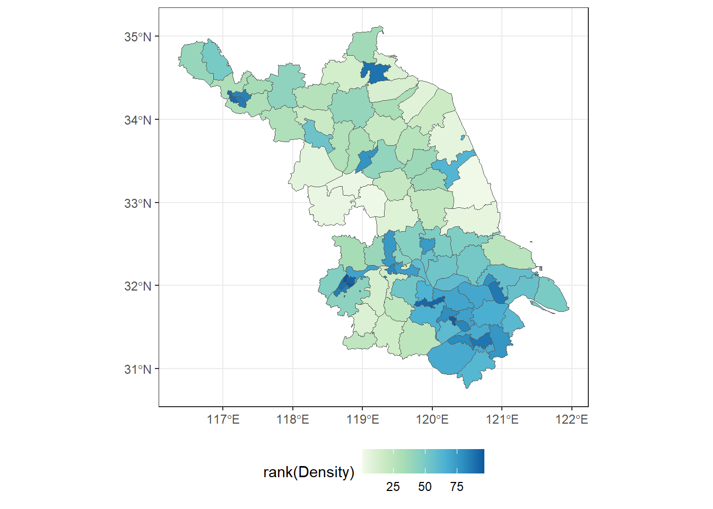
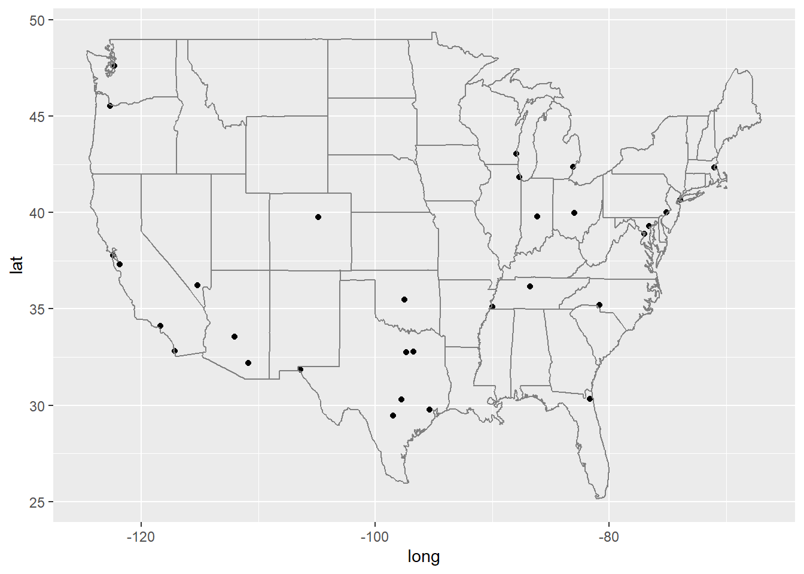
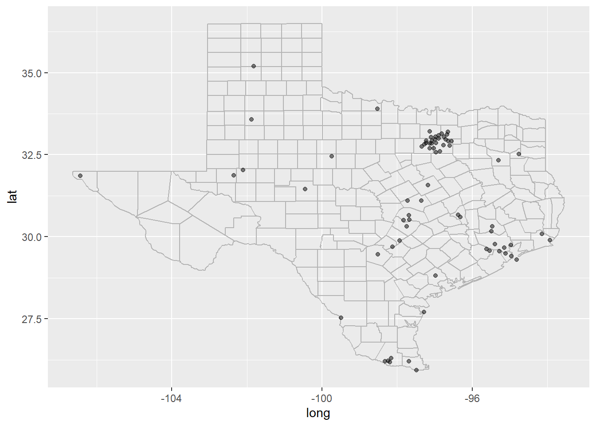
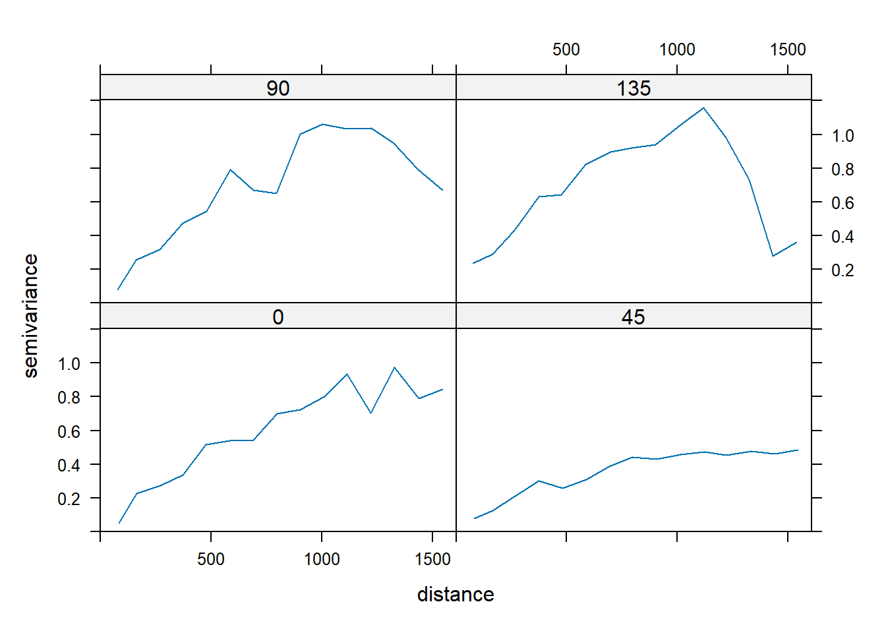

15 第16次课 map
15.1 中国地图
Code
> library(maps)
> library(mapdata)
> map("china", col = "blue", panel.first = grid())
Code
> library(mapchina)
> library(dplyr)
> library(ggplot2)
> library(sf)
> head(china)Simple feature collection with 6 features and 13 fields
Geometry type: MULTIPOLYGON
Dimension: XY
Bounding box: xmin: 115.4248 ymin: 39.44473 xmax: 116.8805 ymax: 41.05936
Geodetic CRS: WGS 84
# A tibble: 6 × 14
Code_County Code_Perfecture Code_Province Name_Province Name_Perfecture
<chr> <chr> <chr> <chr> <chr>
1 110101 1101 11 北京市 <NA>
2 110102 1101 11 北京市 <NA>
3 110114 1101 11 北京市 <NA>
4 110115 1101 11 北京市 <NA>
5 110111 1101 11 北京市 <NA>
6 110116 1101 11 北京市 <NA>
# ℹ 9 more variables: Name_County <chr>, Pinyin <chr>, Pop_2000 <dbl>,
# Pop_2010 <dbl>, Pop_2017 <dbl>, Pop_2018 <dbl>, Area <dbl>, Density <dbl>,
# geometry <MULTIPOLYGON [°]>Code
> js <- china %>%
+ filter(Code_Province == 32)
> ggplot(js) + geom_sf(aes(fill = rank(Density))) +
+ scale_fill_distiller(palette = "GnBu", direction = 1) +
+ theme_bw() +
+ theme(legend.position = "bottom")
15.2 地图 图层合作
“This is a quick and dirty way to get map data (from the maps package) on to your plot. This is a good place to start if you need some crude reference lines, but you’ll typically want something more sophisticated for communication graphics.”
Code
> library(maps)
> library(ggplot2)
> data(us.cities)
> big_citi <- subset(us.cities,pop > 500000) ##人口大于50万的城市
> qplot(long,lat,data=big_citi) + borders("state",size=0.5)
Code
> tx_city <- subset(us.cities,country.etc=="TX")
> ggplot(tx_city,aes(long,lat)) + borders("county","texas",colour="grey70") + geom_point(colour = "black",alpha=0.5)
15.3 leaflet 标记
Code
> library(leaflet)
> library(magrittr)
> # Make data with several positions
> data_red <- data.frame(LONG=42+rnorm(10), LAT=23+rnorm(10), PLACE=paste("Red_place_",seq(1,10)))
> data_blue <- data.frame(LONG=42+rnorm(10), LAT=23+rnorm(10), PLACE=paste("Blue_place_",seq(1,10)))
>
> # Initialize the leaflet map:
> m <- leaflet() %>%
+ setView(lng=42, lat=23, zoom=6 ) %>%
+
+ # Add two tiles
+ addProviderTiles("Esri.WorldImagery", group="background 1") %>%
+ addTiles(options = providerTileOptions(noWrap = TRUE), group="background 2") %>% #If you happen to have a custom map tile URL template to use, you can provide it as an argument to addTiles()
+
+ # Add 2 marker groups
+ addCircleMarkers(data=data_red, lng=~LONG , lat=~LAT, radius=8 , color="black",
+ fillColor="red", stroke = TRUE, fillOpacity = 0.8, group="Red") %>%
+ addCircleMarkers(data=data_blue, lng=~LONG , lat=~LAT, radius=8 , color="black",
+ fillColor="blue", stroke = TRUE, fillOpacity = 0.8, group="Blue") %>%
+
+ # Add the control widget
+ addLayersControl(overlayGroups = c("Red","Blue") , baseGroups = c("background 1","background 2"),
+ options = layersControlOptions(collapsed = FALSE))
>
> m 15.4 网页交互式地图
Code
> library(echarts4r)
>
> cns <- countrycode::codelist$country.name.en
> cns <- data.frame(
+ country = cns,
+ value = runif(length(cns), 1, 200)
+ )
>
> cns |>
+ e_charts(country) |>
+ e_map(value) |>
+ e_visual_map(value)15.5 地统计分析
Code
> library(sp)
> library(gstat)
> data(meuse)#Meuse河流域表层土壤重金属的采样数据
> coordinates(meuse) = ~x+y#构建坐标
>
> data(meuse.grid)#网格
> coordinates(meuse.grid) <- c("x","y")#网格编码
> meuse.grid <- as(meuse.grid,"SpatialPixelsDataFrame")#空间数据转dataframe
>
> plot(variogram(log(zinc)~1,meuse,alpha=c(0,45,90,135)),type="l") #各向异性判断， 0 北 90 东
Code
> v1 <- variogram(log(zinc)~1, meuse, width=90, cutoff=1300)#变异函数与自变量的关系，平均数不变模型
> v <- fit.variogram(variogram(log(zinc)~1,meuse), vgm("Sph"))#球形模型拟合
> plot(v1,v)
Code
> sk.fit <- krige(log(zinc)~1,meuse,meuse.grid,v,beta=5.9)#简单克里格插值[using simple kriging]Code
> plot(sk.fit)#插值结果地图展示
来个电影放松下https://www.bilibili.com/video/BV1xX4y1V7wd/?spm_id_from=333.788.recommend_more_video.-1